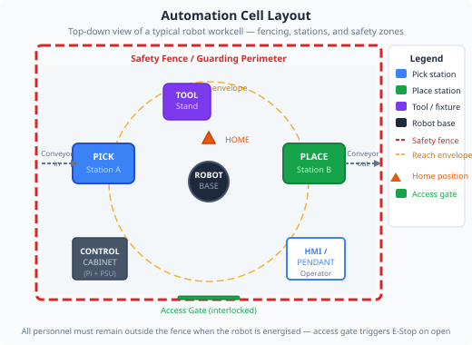
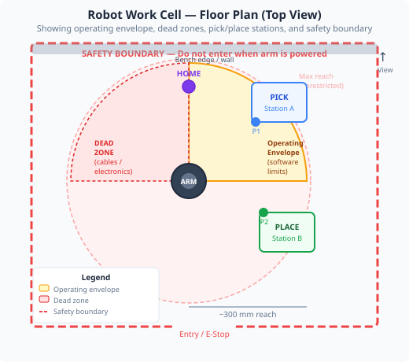

Designing a complete robot work cell — workspace boundaries, stored positions, programs, and safe operating procedures.


An automation cell (or work cell) is the defined physical space, equipment, and procedures that allow a robot to operate safely and productively. It includes:
The volume the robot can physically reach — and the subset where it is allowed to move (the operating envelope).
Safety mechanisms that stop the robot if a human enters the cell — light curtains, door switches, pressure mats.
The sequence of moves the robot follows — stored positions, G-code files, or teach-pendant recordings.
Even a small educational arm needs these elements defined. Without a clear operating envelope, the arm may strike fixtures, cables, or people.
In the absence of physical guards, software dead zones (also called joint limits or software stops) restrict the range of motion to a safe subset. The app's Dead Zones tab lets you configure minimum and maximum joint angles for each axis.
| Limit type | Where set | Priority |
|---|---|---|
| Hardware end-stops | Physical mechanical stops on the joint | Highest — cannot be overridden |
| Software dead zones | Dead Zones tab in the app | Medium — enforced by Python server |
| Program limits | Bounds in G-code / Blockly | Lowest — only applies to that program |
A well-designed cell uses all three layers — defence in depth.
The most common way to program industrial robots is teach-and-playback: an operator manually guides the robot to key positions (using a pendant or jog controls), saves each position, then the robot replays the sequence automatically.
The app's Stored Positions tab implements this. You jog each joint to the desired pose, name it (e.g. pick_above, pick, place_above, place), and store it. A G-code program then moves between them by name or by recalled joint values.
You will define a safe operating envelope, store key positions, and write a G-code program to run a repeating cycle.
In Settings, switch Movement Mode between PTP and Linear Cartesian and repeat the cycle time test at 50% speed in both modes. Record both times. Linear Cartesian mode will typically be slower — the server computes Cartesian waypoints to keep the tool moving in a straight line. Note this in your cycle time table alongside the path quality (use the End-Effector Trace in 3D Visualisation to compare path straightness).
G1 J2=45 F500 — 500 steps/sec ≈ 44°/sec)| Position name | J1 (°) | J2 (°) | J3 (°) | J4 (°) |
|---|---|---|---|---|
| Home | ||||
| Pick Above | ||||
| Pick | ||||
| Place Above |
| Speed setting | Cycle time (s) | Observations |
|---|---|---|
| 25% | ||
| 50% | ||
| 75% | ||
| 50% PTP | ||
| 50% Linear Cartesian |
In a factory, designing a robot cell is an engineering project in its own right. It involves layout drawings (often 2D floor plans and 3D models), risk assessments (ISO 10218-2), cycle time analysis for production planning, and sign-off from safety engineers before any operator enters the cell.
The concepts you applied here — define the envelope, teach positions, write a program, time the cycle — are exactly the steps a robotics engineer follows, just with larger, faster, and more dangerous machinery.
Think about: If this arm was producing 500 parts per day, and each pick-and-place cycle takes 8 seconds, how many cycles per hour would you need? What speed setting would achieve that? Could you redesign the path to shorten the cycle time?
1. What is the highest-priority limit that prevents a robot from exceeding its joint range?
2. In teach-and-playback programming, what does the operator do first?
3. What does the G04 command do in a G-code program?